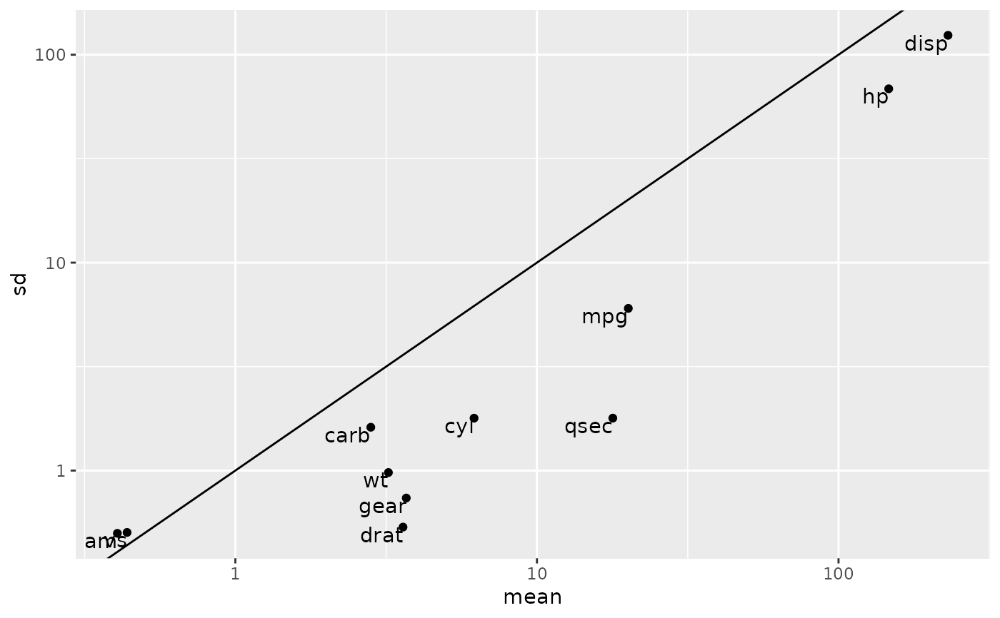

Data frame tidiers are deprecated and will be removed from an upcoming release of broom.
Source
Skew and Kurtosis functions are adapted from implementations in the moments package:
Lukasz Komsta and Frederick Novomestky (2015). moments: Moments, cumulants, skewness,
kurtosis and related tests. R package version 0.14.
https://CRAN.R-project.org/package=moments
Arguments
- x
A data.frame
- ...
Additional arguments for other methods.
- na.rm
a logical value indicating whether
NAvalues should be stripped before the computation proceeds.- trim
the fraction (0 to 0.5) of observations to be trimmed from each end of
xbefore the mean is computed. Passed to thetrimargument ofmean- data
data, not used
Value
tidy.data.frame produces a data frame with one
row per original column, containing summary statistics of each:
- column
name of original column
- n
Number of valid (non-NA) values
- mean
mean
- sd
standard deviation
- median
median
- trimmed
trimmed mean, with trim defaulting to .1
- mad
median absolute deviation (from the median)
- min
minimum value
- max
maximum value
- range
range
- skew
skew
- kurtosis
kurtosis
- se
standard error
glance returns a one-row data.frame with
- nrow
number of rows
- ncol
number of columns
- complete.obs
number of rows that have no missing values
- na.fraction
fraction of values across all rows and columns that are missing
Details
These perform tidy summaries of data.frame objects. tidy produces
summary statistics about each column, while glance simply reports
the number of rows and columns. Note that augment.data.frame will
throw an error.
See also
Other deprecated:
bootstrap(),
confint_tidy(),
finish_glance(),
fix_data_frame(),
summary_tidiers,
tidy.density(),
tidy.dist(),
tidy.ftable(),
tidy.numeric()
Other deprecated:
bootstrap(),
confint_tidy(),
finish_glance(),
fix_data_frame(),
summary_tidiers,
tidy.density(),
tidy.dist(),
tidy.ftable(),
tidy.numeric()
Other deprecated:
bootstrap(),
confint_tidy(),
finish_glance(),
fix_data_frame(),
summary_tidiers,
tidy.density(),
tidy.dist(),
tidy.ftable(),
tidy.numeric()
Examples
td <- tidy(mtcars)
#> Warning: Data frame tidiers are deprecated and will be removed in an upcoming release of broom.
td
#> # A tibble: 11 × 13
#> column n mean sd median trimmed mad min max range
#> <chr> <dbl> <dbl> <dbl> <dbl> <dbl> <dbl> <dbl> <dbl> <dbl>
#> 1 mpg 32 20.1 6.03 19.2 19.7 3.65 10.4 33.9 23.5
#> 2 cyl 32 6.19 1.79 6 6.23 2 4 8 4
#> 3 disp 32 231. 124. 196. 223. 94.8 71.1 472 401.
#> 4 hp 32 147. 68.6 123 141. 52 52 335 283
#> 5 drat 32 3.60 0.535 3.70 3.58 0.475 2.76 4.93 2.17
#> 6 wt 32 3.22 0.978 3.32 3.15 0.517 1.51 5.42 3.91
#> 7 qsec 32 17.8 1.79 17.7 17.8 0.955 14.5 22.9 8.4
#> 8 vs 32 0.438 0.504 0 0.423 0 0 1 1
#> 9 am 32 0.406 0.499 0 0.385 0 0 1 1
#> 10 gear 32 3.69 0.738 4 3.62 1 3 5 2
#> 11 carb 32 2.81 1.62 2 2.65 1 1 8 7
#> # … with 3 more variables: skew <dbl>, kurtosis <dbl>, se <dbl>
glance(mtcars)
#> Warning: Data frame tidiers are deprecated and will be removed in an upcoming release of broom.
#> # A tibble: 1 × 4
#> nrow ncol complete.obs na.fraction
#> <int> <int> <int> <dbl>
#> 1 32 11 32 0
library(ggplot2)
# compare mean and standard deviation
ggplot(td, aes(mean, sd)) + geom_point() +
geom_text(aes(label = column), hjust = 1, vjust = 1) +
scale_x_log10() + scale_y_log10() + geom_abline()
